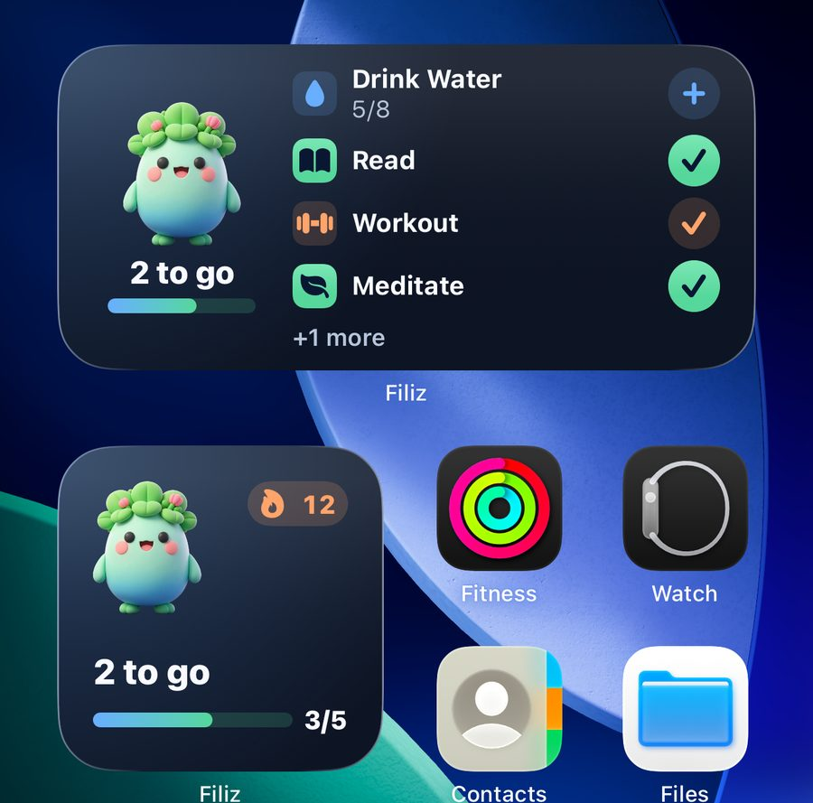
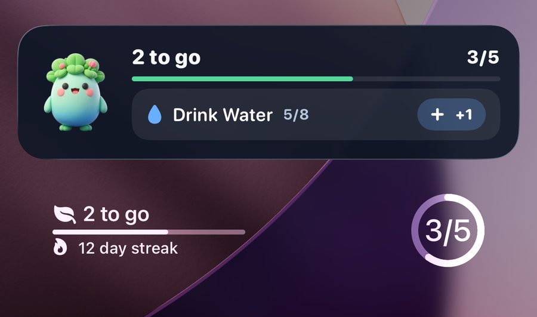
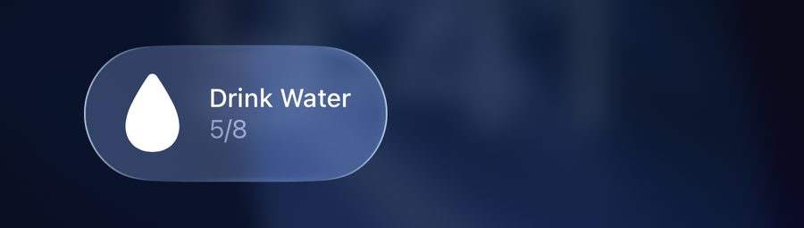
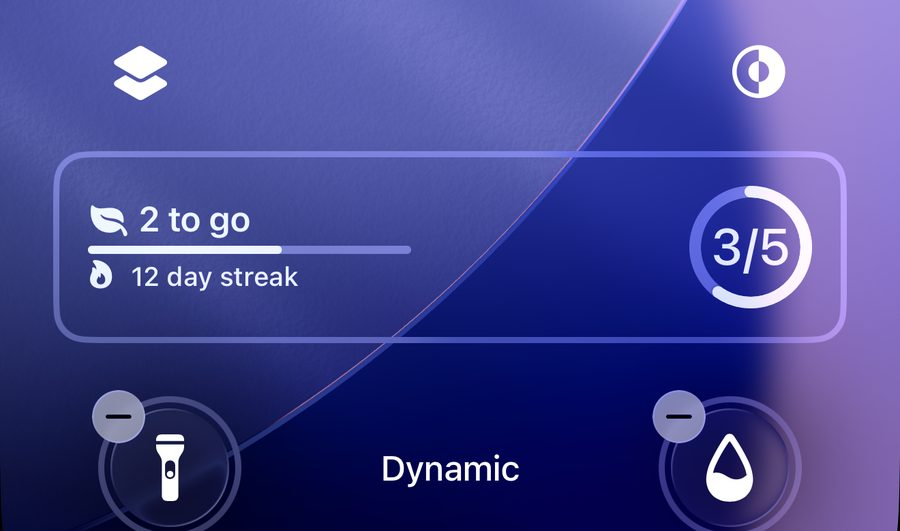
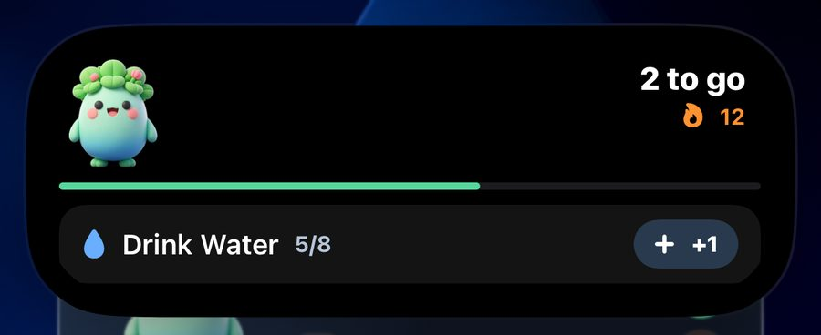

Widgets & Shortcuts
Log habits and check on Filiz without opening the app. iOS lets you add these yourself in a few taps.
Home Screen widgets
See what's left today and check habits off with one tap.

- Touch and hold an empty spot on your Home Screen until the apps jiggle.
- Tap Edit in the top corner, then Add Widget.
- Search for Filiz. Swipe to choose the small Filiz widget or the medium Today widget.
- Tap Add Widget, then Done.
💡 The medium widget has buttons: tap + to add a glass, or ✓ to mark a habit done.
Lock Screen widgets
Your progress and streak right on the Lock Screen.

- Touch and hold the Lock Screen, then tap Customize and choose Lock Screen.
- Tap Add Widgets and choose Filiz.
- Tap the ring, the progress bar, or both.
- Tap Done.
Water in Control Center
Add a glass of water from anywhere, even inside another app.

- Swipe down from the top-right corner to open Control Center.
- Tap + in the top-left corner, then Add a Control.
- Find Filiz and tap Log Water.
- Drag the control's corner to make it wider, so it shows your glasses.
💡 Needs iOS 18 or later. The drop fills up as you drink.
Lock Screen buttons and the Action button
Swap the flashlight or camera button for one-tap water.

- Touch and hold the Lock Screen, tap Customize, then Lock Screen.
- Tap − on the flashlight or camera button, then tap +.
- Choose Log Water from Filiz and tap Done.
- Action button (iPhone 15 Pro and later): Settings › Action Button › Controls › Log Water.
Live Activity and Dynamic Island
Filiz stays with you at the top of the screen and on the Lock Screen.

- It starts by itself when you leave the app and habits are left today (5 am to 10 pm).
- Touch and hold the Dynamic Island to open it, then tap +1 or ✓.
- When your day is done, Filiz pops up to celebrate.
💡 Turn it off any time in the app: Settings › Filiz in the Dynamic Island.
Apple Watch
Check habits off from your wrist and put Filiz on your watch face.
- Open the Watch app on your iPhone and scroll to Available Apps.
- Tap Install next to Filiz.
- To add a complication, touch and hold your watch face, tap Edit, then pick Filiz.
💡 Reminders show up on your watch on their own when your iPhone is locked.
Siri and Shortcuts
Log a habit with your voice.
- Say “Hey Siri, log Drink Water in Filiz.”
- Or ask “How am I doing in Filiz?”
- Find more in the Shortcuts app under Filiz.
Done right from a reminder
No need to open the app when a reminder arrives.
- Touch and hold the reminder, then tap Mark done.
- Water can remind you up to four times a day, other habits twice. Set the times in the habit's edit screen.
- Once a habit is done, the rest of today's reminders for it stop.